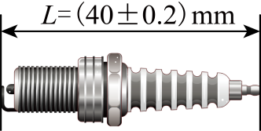
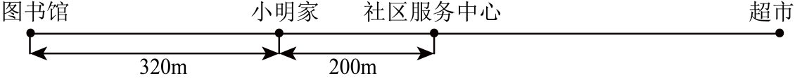

第二章 有理数及其运算·培优卷
【北师大版2024】
参考答案与试题解析
第Ⅰ卷
一．选择题（共10小题，满分30分，每小题3分）
1．（3分）（24-25七年级下·河北秦皇岛·期末）第33届夏季奥林匹克运动会于2024年7月26日至8月11日在法国巴黎举行．据中国视听大数据（CVB）统计，在此期间，全国卫视共播出近5000期奥运相关节目，累计观看人次达159.9亿，将159.9亿用科学记数法表示为（ ）
A．0.1599×1011 B．1.599×1010 C．1.599×109 D．15.99×109
【答案】B
【分析】该题考查了科学记数法，科学记数法的表示形式为a×10n的形式，其中1≤|a|<10,n为整数，确定n的值时，要看把原数变成a时，小数点移动了多少位，n的绝对值与小数点移动的位数相同．当原数绝对值≥10时，n是正数；当原数的绝对值<1时，n是负数．据此求解即可．
【详解】解：依题意，159.9亿=15990000000=1.599×1010，
则159.9亿用科学记数法表示为1.599×1010，
故选：B．
2．（3分）（2025·吉林松原·模拟预测）若−3×□的运算结果为正数，则□内的数字可以为（ ）
A．−1 B．0 C．1 D．2
【答案】A
【分析】本题主要考查了有理数的乘法计算．根据有理数的乘法计算法则，即可得到答案．
【详解】解：∵−3×□的运算结果为正数，
∴□内的数字为负数，故A选项符合题意；
故选：A
3．（3分）（2021·河北石家庄·一模）若a为整数，则a23表示的是（ ）
A．3个a2相乘 B．2个a3相加 C．3个a2相加 D．5个a相乘
【答案】A
【分析】本题考查幂的乘方运算，熟练掌握并理解幂的乘方等于底数不变，指数相乘是解题的关键．根据幂的乘方法则：(am)n=am×n，即幂的乘方等于底数不变，指数相乘，进行分析即可．
【详解】解：a23表示3个a2相乘或者a23=a2×3=a6表示6个a相乘．
故选：A．
4．（3分）（2025·山西晋城·三模）如图，这是某机器零件的设计图纸.下列长度（L）的零件合格的是（ ）

A．39.2mm B．39.6mm C．39.9mm D．40.5mm
【答案】C
【分析】本题考查了正负数的意义，先算出零件合格的范围为39.8≤L≤40.2，再判断每个选项的数值在不在范围内，如果在吗，那就符合题意，否则不符合题意，即可作答．
【详解】解：依题意，40−0.2=39.8,40+0.2=40.2，
∴零件合格的范围为39.8≤L≤40.2
∵39.2<39.8，
∴A选项不符合题意；
∵39.6<39.8，
∴B选项不符合题意；
∵39.8<39.9<40.2，
∴C选项符合题意；
∵40.2<40.5，
∴D选项不符合题意；
故选：C
5．（3分）（2025·吉林长春·二模）把−2−+3−−4写成省略加号的和的形式，正确的是（ ）
A．−2+3+4 B．−2−3+4 C．−2−3−4 D．−2+3−4
【答案】B
【分析】本题考查有理数的加减．根据减去一个数等于加上这个数的相反数，然后去掉括号和加号即可．
【详解】解：−2−+3−−4
=−2−3+4，
故选：B．
6．（3分）（24-25七年级上·山西太原·阶段练习）李双、李见是一对爱学习、进取心强的姐妹，学完第一章《有理数》后，李双对李见说：“a是最小的正整数，b是最大的负整数，c是绝对值最小的数，d是倒数等于自身的有理数，你说a−b+c−d等于多少？”李见脱口答出正确答案，聪明的你知道答案是多少吗？（ ）
A．1 B．3 C．1或3 D．2或−1
【答案】C
【分析】本题主要考查有理数，绝对值，倒数的定义等知识点．此题的关键是弄清：最小的正整数是1，最大的负整数是−1，绝对值最小的数是0，倒数等于自身的有理数±1．
最小的正整数是1，最大的负整数是−1，绝对值最小的数是0，倒数等于自身的有理数±1，然后求出a−b+c−d的值即可．
【详解】解：∵a为最小的正整数，
∴a=1，
∵b是最大的负整数，
∴b=−1，
∵c是绝对值最小的数，
∴c=0，
∵d是倒数等于自身的有理数，
∴d=±1，
∴a−b+c−d=1−−1+0−1=1或a−b+c−d=1−−1+0−−1=3，
∴a−b+c−d的值为1或3，
故选：C．
7．（3分）（23-24七年级下·北京·阶段练习）以下的运算的结果中，最大的一个数是（ ）
A．−13579+0.2468 B．−13579+12468
C．(−13579)×12468 D．(−13579)÷12468
【答案】C
【分析】本题考查有理数的运算，有理数的大小比较．比较四个选项的运算结果即可，需注意负数参与不同运算后的符号和大小变化．
【详解】解：选项A：−13579+0.2468=−13578.7532．
选项B：−13579+12468=−1357824672468．
选项C：−13579×12468=−135792468，
选项D：−13579÷12468=−33512972．
∵−33512972=33512972,−13578.7532=13578.7532,−1357824672468=1357824672468，−135792468=135792468，
∴33512972>13578.7532>1357824672468>135792468，
∴−135792468最大，
故选C．
8．（3分）（2025·河北邯郸·二模）如图，数轴上有三个点A，B，C，其中C是线段AB的中点，则原点O的位置（ ）

A．位于线段AC上，且靠近A点 B．位于线段AC上，且靠近C点
C．位于线段BC上，且靠近B点 D．位于线段BC上，且靠近C点
【答案】D
【分析】本题考查了数轴上找原点，理解中点和数轴的定义是解答关键．
根据中点求出C点表示的数，再利用数轴的定义求解．
【详解】∵C是线段AB的中点，
∴C点表示的数是−7+52=−1，
∴原点O位于线段BC上，且靠近C点．
故选：D．
9．（3分）（24-25七年级下·云南文山·期末）中国古代著作《九章算术》在世界数学史上首次正式引入负数，如果将“收入100元记作+100元”，那么“支出80元”应记作（ ）
A．+80元 B．−80元 C．+100元 D．−100元
【答案】B
【分析】本题考查了相反意义的量，熟练掌握正负数的意义是解答本题的关键．已知收入记为“+”，则支出应记为“−”，直接根据数值对应符号即可得出答案．
【详解】解：因为收入100元记作+100元，
所以支出80元记作−80元．
故选：B．
10．（3分）（2025·河北邯郸·二模）−3与−−3的关系是（ ）
A．相等 B．互为相反数 C．互为倒数 D．积为−9
【答案】A
【分析】此题考查了绝对值和化简多重符号，首先化简绝对值和多重符号，然后比较即可．
【详解】解：−3=3，−−3=3
∴−3与−−3的关系是相等．
故选：A．
二．填空题（共6小题，满分18分，每小题3分）
11．（3分）（2025·云南楚雄·模拟预测）如图，已知数轴上点A表示的数是2024，且OA=OB，则点B表示的数是 ．

【答案】−2024
【分析】本题主要考查了数轴上两点距离计算，用数轴表示有理数，先求出OA=2024，进而得到OB=2024，由此即可得到答案．
【详解】解：∵数轴上点A表示的数是2024，
∴OA=2024，
∵OA=OB，
∴OB=2024，
∵点B在原点左侧，
∴点B表示的数是−2024，
故答案为：−2024．
12．（3分）（2025·湖北十堰·三模）珠穆朗玛峰海拔约8849米，吐鲁番盆地最低处海拔约为−155米，两地的相对高度（即山峰最高处比盆地最低处高）是 米．
【答案】9004
【分析】此题考查有理数的减法，解题的关键是熟练运用有理数的减法法则：减去一个数，等于加上这个数的相反数．根据题意列出算式即可求出答案．
【详解】解：依题意，8849−−155=9004
故答案为：9004．
13．（3分）（24-25七年级上·山东威海·期末）如图，按程序框图中的顺序计算，当输入的初始值x为32时，则输出的最后结果为 ．

【答案】128
【分析】本题考查程序流程图与有理数的运算，把32代入流程图，列出算式进行计算，直至最后结果>100，即可．
【详解】解：32×12÷−14=−64<100，
−64×12÷−14=128>100，输出；
故答案为：128．
14．（3分）（2025·四川资阳·模拟预测）在−22,−4,(−1)2011,π,511,−(−13)3,3.1415,0，数中，其中整数有m个，非负数有n个，即m−n= ．
【答案】−1
【分析】本题考查了有理数的分类，代数式求值，掌握有理数的分类是解题的关键，注意0比较特殊，是整数，既不是正数也不是负数．根据整数，非负数的定义得出m=5，n=6，代入计算即可得到答案．
【详解】解：∵−22=−4，−4=4，−12011=−1，−−133=133，
整数有−22、−4，−12011，−−133，0，共5个，即m=5，
非负数有−4、π，511，−−133，3.1415，0，共6个，即n=6，
∴m−n=5−6=−1，
故答案为：−1．
15．（3分）（2025·江西吉安·一模）如下表所示，算筹是我国古代的计算工具之一，摆法有纵式和横式两种，横式和纵式都可以表示同一个数，古人在个位数上划上斜线以表示负数．如“”表示−723，则“ ”所表示的数是 ．
”所表示的数是 ．

【答案】−652
【分析】本题主要考查了正数和负数，解题的关键是读懂题目，找出数筹和数字的对应关系．
根据题干描述的算筹计数法计数即可．
【详解】
解：根据算筹计数法，“”所表示的数是−652，
故答案为：−652．
16．（3分）（24-25七年级上·江苏常州·期末）如图，图书馆、小明家、社区服务中心和超市在同一条笔直的马路上．若小明家位于图书馆和超市连线段上靠近图书馆的三等分点处，则社区服务中心和超市的距离为 m．

【答案】440
【分析】本题考查了有理数加减的混合运算，理解题意计算出图书馆到超市的距离是关键．
根据题意，先求出图书馆到超市的距离，再列出960−320−200计算即可．
【详解】解：∵小明家位于图书馆和超市连线段上靠近图书馆的三等分点处，
∴图书馆到超市的距离为：320×3=960m，
∴社区服务中心和超市的距离为：960−320−200=440m．
故答案为：440．
第Ⅱ卷
三．解答题（共8小题，满分72分）
17．（6分）（24-25七年级上·湖北恩施·阶段练习）计算：
(1)−8+10+2+−1；
(2)−−22+−23×5−−28÷4
【答案】(1)3
(2)−29
【分析】本题考查了有理数的混合运算，解题的关键是掌握运算法则和运算顺序．
（1）根据有理数的加减混合运算法则求解即可；
（2）先计算乘方，然后计算乘除，最后计算加减．
【详解】（1）−8+10+2+−1
=2+1
=3；
（2）−−22+−23×5−−28÷4
=4+−8×5+7
=4−40+7
=−29．
18．（6分）（23-24七年级上·江苏扬州·阶段练习）已知x2=64，y=9，
(1)求x和y的值；
(2)若x>y，求x−y的值．
【答案】(1)x=8或−8；y=9或−9
(2)17或1
【分析】（1）利用有理数的乘方的定义、绝对值的定义计算即可；
（2）根据题意确定x、y的值，代入求代数式的值即可．
【详解】（1）解：∵x2=64，
∴x=±8，
∵y=9，
∴y=±9；
（2）∵x>y，
∴x=±8时，y=−9，
∴x−y=8−−9=8+9=17，
或x−y=−8−−9=−8+9=1，
∴x−y=17或1．
【点睛】本题考查了有理数的乘方和绝对值的意义，求解代数式的值，做题的关键是掌握有理数的乘方的定义、绝对值的定义．
19．（8分）（24-25六年级上·山东威海·期末）数学老师布置了一道思考题“计算：−112÷13−56”，小明用了一种不同的方法解决了这个问题，他认为原式的倒数为13−56÷−112=13−56×(−12)=−4+10=6，所以−112÷13−56=16．
请你运用小明的解法计算：−130÷15+13−115．
【答案】−114
【分析】本题考查有理数计算．根据题意利用小明解法先取原式的倒数，再转化为乘法，计算后再取倒数即可．
【详解】解：原式的倒数为15+13−115÷−130
=15+13−115×−30
=15×−30+13×−30−115×−30
=−6−10+2
=−14；
∴−130÷15+13−115=−114．
20．（8分）（24-25七年级上·江苏泰州·阶段练习）对有理数a、b定义运算∗如下：a∗b=a+2b−3．
(1)计算4∗−3=______；
(2)求−5∗−2∗6的值．
【答案】(1)−36
(2)9
【分析】（1）根据定义的运算代入求解即可得出答案；
（2）先计算中括号里面的，再计算括号外面的即可得出答案．
本题考查的是有理数的混合运算，解题关键在于根据新定义列出代数式．
【详解】（1）根据题意得，4∗−3
=4+2−3−3
=6×−6
=−36；
（2）−2∗6
=−2+2×6−3
=0×3
=0
−5∗−2∗6
=−5∗0
=−5+2×0−3
=−3×−3
=9．
21．（10分）（22-23七年级上·江苏无锡·阶段练习）如图，小明有5张写着不同的数字的卡片，请你按要求取出卡片，完成下列问题：

(1)从中取出2张卡片，使这2张卡片上数字乘积最大，最大值是 ；
(2)从中取出2张卡片，使这2张卡片上数字相除的商最小，最小值是 ；
(3)从中取出4张卡片，用学过的运算方法，写出一个运算式使结果为24．
【答案】(1)15
(2)−52
(3)−3−−5×3×4=24
【分析】本题考查了有理数的混合运算，解题的关键是掌握有理数的运算法则．
（1）根据乘积最大的就是找符号相同且数值最大的数，即可求解；
（2）根据2张卡片上数字相除的商最小就要找符号不同，且分母越大越好，分子越小越好，据此求解即可；
（3）用加减乘除只要答数是24即可．
【详解】（1）解：由题意可得，从中抽出2张卡片，使这两张卡片上数字乘积最大，最大值是：−3×−5=15，
故答案为：15；
（2）由题意可得，从中抽出2张卡片，使这两张卡片上数字相除的商最小，最小值是：−5÷2=−52，
故答案为：−52；
（3）由题意可得，−3−−5×3×4=24．
22．（10分）（24-25七年级上·江苏泰州·阶段练习）某粮库6天内的粮食进出库的吨数为：+23，−32，−15，+34，−36，−20．问：
(1)经过这6天，库里的粮食是增多了多少？还是减少了多少？
(2)经过这6天，仓库管理员发现库里还存有520吨粮食，那么6天前库里存粮多少吨？
(3)如果进出的装卸费都是每吨5元，那么这6天需要多少装卸费？
【答案】(1)减少了46吨
(2)6天前库里存粮566吨
(3)这6天需要800元装卸费
【分析】本题考查了正负数的实际意义，绝对值的计算，有理数混合运算的应用，理解题意，正确计算是解题的关键．
（1）把粮食进出库的吨数相加，若为正则增加，若为负则减少，若为0则不增不减；
（2）经过6天库存的粮食等于原有粮食与6天粮食的变化量的和为520吨，由此列式即可求解原有粮食的库存数；
（3）计算出进出粮食的总吨数，即计算出粮库进出库数量的绝对值的和，再乘以装卸费即可求解．
【详解】（1）解：(+23)+(−32)+(−15)+(+34)+(−36)+(−20)
=−46（吨）；
答：经过这6天，库里的粮食是减少了46吨；
（2）解：520−(−46)=566（吨）；
答：6天前库里存粮566吨；
（3）解：+23+−32+−15++34+−36+−20
=160（吨），
160×5=800（元）；
答：这6天需要800元装卸费．
23．（12分）（23-24七年级上·山东潍坊·期中）十进制是用0～9这十个数字来表示数，满十进一，例：212=2×102+1×10+2；计算机常用二进制来表示字符代码，它是用0和1两个数来表示数，满二进一，例：二进制数10000转化为十进制数：1×24+0×23+0×22+0×21+0=16；其他进制也有类似的算法．

(1)根据以上信息，将二进制数“101110”转化为十进制数．
(2)中国古代《易经》一书中记载，人们通过在绳子上打结来记录数量，即“结绳记数”．如图，一位妇女在从右到左依次排列的绳子上打结，满六进一，用来记录采集到的野果数量．根据图，计算采集到的野果数量．
【答案】(1)46
(2)采集到的野果数量为542个
【分析】本题考查了有理数的乘方的应用；
（1）根据题意写成1×25+0×24+1×23+1×22+1×21+0，进而进行计算即可求解；
（2）由于满六进一，类似于六进制数，转化为十进制数为：2×63+3×62+0×21+2×60，进而计算即可求解．
【详解】（1）解： 101110转化为十进制数是：
1×25+0×24+1×23+1×22+1×21+0
=32+0+8+4+2+0
=46，
故答案为：46；
（2）由于满六进一，类似于六进制数，转化为十进制数为：
2×63+3×62+0×21+2×60
=432+108+0+2
=542．
答：采集到的野果数量为542个．
24．（12分）（24-25七年级上·重庆秀山·期末）2024年11月7日，恰逢立冬，又遇我县第一届运动会，更是我县41岁“生日”．为保证运动会顺利进行，全县人民高度重视并积极参与．某出租车驾驶员无偿为各能量补给站运送物资，他从物资配送站出发，在东西向的站前大道上连续接送6批物资，行驶路程记录如下（规定向东为正，向西为负，单位：km）：
第1批 | 第2批 | 第3批 | 第4批 | 第5批 | 第6批 |
4km | −7km | −3km | 6km | −9km | 5km |
(1)接送完第6批物资后，该驾驶员在物资配送站什么方向，距离物资配送站多少千米？
(2)若该出租车每千米耗油0．6升，那么在这个过程中共耗油多少升？
【答案】(1)该驾驶员在物资配送站西边，距离物资配送站4千米
(2)20.4升
【分析】(1)计算各里程的和，正表示在东，负表示在西，绝对值表示距离．
(2) 计算各里程的绝对值的和，计算出耗油量较即可．
本题考查了正负数的实际应用，有理数的加减混合运算，有理数的乘法，熟练掌握有理数的加减混合运算法则是解题的关键．
【详解】（1）解：∵4−7−3+6−9+5=−4(千米)，
∴该驾驶员在物资配送站西边，距离物资配送站4千米．
（2）解：∵4+−7+−3+−9+6+5=34千米，
∴耗油量为：34×0.6=20.4（升），
答：这个过程中共耗油20.4升．